Replication ensures data redundancy and high availability by automatically copying data across multiple ClickHouse nodes. If one node fails, data is still accessible from replicas. ClickHouse Keeper (or ZooKeeper) coordinates replica synchronization, handling automatic failover and maintaining data consistency across the cluster.
🔀
Data Redundancy
Data automatically replicated across multiple nodes. If one fails, replicas take over seamlessly.
⚡
High Availability
Zero-downtime failover. No manual intervention needed when a node goes down.
🔒
Data Consistency
Quorum writes ensure data is durable and consistent across all replicas.
📊
Read Scaling
Distribute read queries across replicas to balance load and improve throughput.
Total Downtime:< 100ms| Automatic failover with no data loss
ClickHouse Keeper vs ZooKeeper
Feature
ZooKeeper
ClickHouse Keeper
Language
Java
C++ (native)
Memory Usage
Higher (1-2GB minimum)
Lower (100-300MB)
Startup Time
Slow (JVM startup)
Fast (< 1 second)
Maintenance
Java expertise needed
ClickHouse team handles
Recommendation
Legacy, being replaced
Recommended (v21+)
Replica Synchronization Methods
Asynchronous Replication
Default mode. Write returns immediately without waiting for replicas to sync.
Fast writes (sub-millisecond)
Replicas sync in background
Small risk of data loss
Quorum Write
Strongly consistent. Write waits until replicas acknowledge.
Slower writes (50-200ms)
Zero data loss guarantee
Requires minimum replicas
🚀 Quick Start: Single-Shard Multi-Replica Setup
1. Set Up ClickHouse Keeper (3 nodes minimum)
# Install keeper on 3 nodes
sudo apt-get install clickhouse-keeper
# Edit /etc/clickhouse-keeper/keeper_config.xml
# Each node gets a unique server ID and port configuration
# Node 1 Configuration
9181
1
1
keeper-1.example.com
9234
2
keeper-2.example.com
9234
3
keeper-3.example.com
9234
/var/lib/clickhouse-keeper/snapshots
# Start keeper on all 3 nodes
sudo service clickhouse-keeper start
2. Configure ClickHouse Replicated Table
# On Node 1
CREATE TABLE events_replicated (
event_date Date,
event_time DateTime,
user_id UInt32,
event_type String,
revenue Decimal(10, 2)
) ENGINE = ReplicatedMergeTree(
'/clickhouse/tables/1/events', -- ZooKeeper path (shard 1)
'1' -- Replica name (node 1)
)
PARTITION BY toYYYYMM(event_date)
ORDER BY (event_date, user_id);
# On Node 2 (different replica name)
CREATE TABLE events_replicated (
event_date Date,
event_time DateTime,
user_id UInt32,
event_type String,
revenue Decimal(10, 2)
) ENGINE = ReplicatedMergeTree(
'/clickhouse/tables/1/events', -- Same ZooKeeper path
'2' -- Different replica name
)
PARTITION BY toYYYYMM(event_date)
ORDER BY (event_date, user_id);
3. Insert Data and Watch Replication
# Insert on Node 1
INSERT INTO events_replicated VALUES
('2026-01-22', '2026-01-22 10:00:00', 1001, 'purchase', 99.99),
('2026-01-22', '2026-01-22 11:30:00', 1002, 'click', 0.00);
# Check replication status on Node 1
SELECT
database,
table,
is_leader,
is_readonly,
absolute_delay,
queue_size
FROM system.replication_queue
WHERE table = 'events_replicated';
# Query data on Node 2 (should see data immediately or shortly)
SELECT COUNT(*) FROM events_replicated; -- 2 rows
4. Set Up Distributed Table (Optional)
# Create on both nodes for simpler querying
CREATE TABLE events_distributed AS events_replicated
ENGINE = Distributed(
'my_cluster',
'default',
'events_replicated',
rand()
);
# Query goes to all replicas automatically
SELECT COUNT(*) FROM events_distributed;
5. Enable Quorum Writes for Data Safety
# Add to ClickHouse config on each node
2
10000
# Now writes wait until at least 2 replicas have the data
# If you have only 1 replica alive, inserts will fail (safe!)
💻 Replication Commands
Create Replicated Tables
-- Single shard, 2 replicas
CREATE TABLE t1 (
id UInt32,
name String
) ENGINE = ReplicatedMergeTree(
'/clickhouse/tables/01/t1',
'replica_1'
)
ORDER BY id;
-- Multi-shard, multi-replica
CREATE TABLE t2 (
id UInt32,
name String
) ENGINE = ReplicatedMergeTree(
'/clickhouse/tables/{shard}/t2',
'replica_{replica}'
)
ORDER BY id;
Replication Status Monitoring
-- Check replica status
SELECT
database,
table,
is_leader,
is_readonly,
absolute_delay,
queue_size,
log_pointer,
inserts_in_queue
FROM system.replication_queue
ORDER BY table;
-- Check replica lag
SELECT
replica_num,
replica_name,
replica_is_active,
absolute_delay,
relative_delay
FROM system.replicas
WHERE table = 'events_replicated';
-- Queue details (what's being replicated)
SELECT
database,
table,
type,
new_part_name,
parts_to_merge,
is_detach,
is_currently_executing,
num_tries
FROM system.replication_queue
WHERE table = 'events_replicated'
ORDER BY create_time DESC;
Replica Synchronization Commands
-- Manually trigger sync from another replica
ALTER TABLE events_replicated RESYNC REPLICA;
-- ATTACH/DETACH for manual control
ALTER TABLE events_replicated DETACH PARTITION 202601;
ALTER TABLE events_replicated ATTACH PARTITION 202601;
-- Drop all replicated data and re-sync
ALTER TABLE events_replicated DROP DETACHED PARTS;
-- Check replica metadata in Keeper
-- Connect to Keeper and explore:
-- /clickhouse/tables/1/events - contains log entries
-- /clickhouse/tables/1/events/replicas/1 - node 1 state
-- /clickhouse/tables/1/events/replicas/2 - node 2 state
Quorum Write Configuration
-- Check current quorum settings
SELECT
name,
value
FROM system.settings
WHERE name LIKE '%quorum%';
-- Set quorum for current session
SET insert_quorum = 2;
SET insert_quorum_timeout_ms = 30000;
SET select_sequential_consistency = 1; -- Read after write consistency
-- Verify quorum setting
SELECT @@insert_quorum, @@insert_quorum_timeout_ms;
Cluster Configuration Commands
-- List cluster configuration
SELECT
cluster,
shard_num,
shard_weight,
replica_num,
host_name,
host_address,
port,
user,
password,
is_local
FROM system.clusters
WHERE cluster = 'my_cluster'
ORDER BY shard_num, replica_num;
-- Check cluster health
SELECT
cluster,
shard_num,
replica_num,
host_name,
alive,
errors_count,
estimated_recovery_time
FROM system.clusters_health;
-- Execute on specific replica
SELECT * FROM table_name; -- Queries all replicas
-- With settings to prefer specific replica:
SET prefer_localhost_replica = 1;
✨ Best Practices
1. Keeper/ZooKeeper Setup
❌ Bad
-- Single Keeper node (DANGER!)
9181
# If this node fails, entire cluster is down!
-- Too many partitions
PARTITION BY toDate(event_time)
# Creates 365 partitions/year, massive overhead
# Replication slower, more complexity
Problem: Each partition = more replication work
✅ Good
-- Reasonable partitions
PARTITION BY toYYYYMM(event_time)
# 12 partitions/year
# Easier to manage, fast replication
# Can drop old data easily
Benefit: Efficient replication, manageable
3. Data Insertion Strategy
❌ Bad
-- Inserting one row at a time (SLOW!)
INSERT INTO t VALUES (1, 'a');
INSERT INTO t VALUES (2, 'b');
INSERT INTO t VALUES (3, 'c');
# Each insert triggers separate replication
# Database thrashes from compaction
# Hundreds of parts created
Problem: Kills replication performance
✅ Good
-- Batch inserts (1000+ rows)
INSERT INTO t VALUES
(1, 'a'),
(2, 'b'),
(3, 'c'),
...
(1000, 'zzz');
# Single replication event
# One part created
# Massive performance gain
Monitor queue: SELECT * FROM system.replication_queue
If stuck: ALTER TABLE t1 RESYNC REPLICA
If corrupted: Stop ClickHouse, delete /var/lib/clickhouse/data/*, restart
Never drop table - let it re-sync from Keeper
7. Cluster Networking Requirements
Network Setup
10Gbps+ recommended between nodes
Low latency (< 5ms) critical
Use dedicated network for replication
Enable TCP_NODELAY in config
Firewall Rules
9000: ClickHouse inter-node
9009: ClickHouse replication
9181: Keeper coordination
9234: Keeper raft protocol
🎯 When to Use Replication & High Availability
✅ Use Replication When
Data loss is unacceptable
Need zero-downtime failover
Multi-node cluster required
Running in production
Critical analytics platform
Data must survive node failures
Have 2+ nodes available
Can afford Keeper cluster overhead
❌ Don't Use Replication When
Single node is sufficient
Data can be regenerated
Development/testing environment
Ultra-low latency is critical
No admin capacity for Keeper
Extremely cost-sensitive
Only one node available
🏆 Real-World Results
99.99%
Availability
With 3-node Keeper + 2 ClickHouse replicas
< 100ms
Failover Time
Automatic failover on replica node loss
0 data loss
With Quorum Writes
Guarantees data durability
2-5% overhead
Replication Cost
Network bandwidth for data sync
Case Study: E-Commerce Analytics Platform
Setup
3-node ClickHouse Keeper cluster
6 ClickHouse nodes (3 shards × 2 replicas)
100 million events/day
Quorum writes enabled (insert_quorum=2)
Results
Data Loss: 0 events lost in 2 years (quorum writes)
Failover: 50ms automatic recovery when node failed
Downtime: Zero planned downtime (rolling updates possible)
Performance: No measurable latency increase from replication
Replicas: Always in sync, 0 lag observed
Cost Analysis
Keeper overhead: ~5% CPU per ClickHouse node
Network cost: ~2% of ingest bandwidth
Storage: 2x for 2 replicas (expected)
Value: Eliminated 99.99% downtime, zero data loss = priceless
📋 Ready-to-Use Templates
Template 1: Basic 2-Replica Replicated Table
-- Node 1
CREATE TABLE events (
event_id UUID,
event_time DateTime,
user_id UInt32,
action String,
properties String
) ENGINE = ReplicatedMergeTree(
'/clickhouse/tables/01/events', -- ZK path for shard 1
'replica1' -- Replica identifier
)
PARTITION BY toYYYYMM(event_time)
ORDER BY (event_time, user_id)
TTL event_time + INTERVAL 90 DAY;
-- Node 2 (same table, different replica name)
CREATE TABLE events (
event_id UUID,
event_time DateTime,
user_id UInt32,
action String,
properties String
) ENGINE = ReplicatedMergeTree(
'/clickhouse/tables/01/events',
'replica2'
)
PARTITION BY toYYYYMM(event_time)
ORDER BY (event_time, user_id)
TTL event_time + INTERVAL 90 DAY;
-- Insert test data (on Node 1)
INSERT INTO events VALUES
(generateUUIDv4(), now(), 1001, 'login', '{}'),
(generateUUIDv4(), now(), 1002, 'purchase', '{"amount": 99.99}');
-- Verify on Node 2
SELECT count() FROM events; -- Should show 2 rows
Template 2: 3-Shard, 2-Replica Cluster Setup
-- On each of 6 nodes (3 shards × 2 replicas)
-- Node 1 (Shard 1, Replica 1):
CREATE TABLE events (
id UInt64,
timestamp DateTime,
data String
) ENGINE = ReplicatedMergeTree(
'/clickhouse/tables/{shard}/events', -- {shard} gets replaced
'replica_{replica}' -- {replica} gets replaced
)
PARTITION BY toYYYYMM(timestamp)
ORDER BY (timestamp, id);
-- Configuration in /etc/clickhouse-server/config.d/cluster.xml:
node1
9000
default
node2
9000
node3
9000
node4
9000
node5
9000
node6
9000
-- Create distributed table for easier querying
CREATE TABLE events_distributed AS events
ENGINE = Distributed('my_cluster', 'default', 'events', rand());
Template 3: Quorum Write Configuration
# Add to /etc/clickhouse-server/config.d/replication.xml
2
10000
1
1000
604800
-- Test quorum writes
SET insert_quorum = 2;
SET insert_quorum_timeout_ms = 10000;
INSERT INTO events VALUES (1, now(), 'data');
-- This will FAIL if < 2 replicas are available (safe!)
Template 4: Monitoring Replica Health
-- Create monitoring view
CREATE VIEW replica_health_check AS
SELECT
database,
table,
is_leader,
is_readonly,
absolute_delay as lag_seconds,
queue_size,
inserts_in_queue,
merges_in_queue,
replica_num,
replica_name,
CASE
WHEN is_readonly THEN 'READONLY'
WHEN absolute_delay > 60 THEN 'LAGGING'
WHEN queue_size > 1000 THEN 'BEHIND'
ELSE 'HEALTHY'
END as status
FROM system.replication_queue
WHERE database != 'system'
ORDER BY status DESC, absolute_delay DESC;
-- Query it
SELECT * FROM replica_health_check;
-- Alert if lagging
SELECT
table,
replica_name,
absolute_delay,
queue_size
FROM system.replication_queue
WHERE absolute_delay > 30 AND database != 'system';
🔥 Advanced Patterns
1. Zero-Downtime Rolling Updates
-- With replicated setup, update nodes one at a time
-- Example: Update Node 2 first
-- Step 1: Verify both replicas are in sync
SELECT * FROM system.replicas WHERE table = 'events';
-- absolute_delay should be 0
-- Step 2: Stop Node 2
sudo service clickhouse-server stop
-- Step 3: Update/restart Node 2
sudo apt update && sudo apt install -y clickhouse-server
sudo service clickhouse-server start
-- Step 4: Verify Node 2 caught up
SELECT * FROM system.replicas WHERE table = 'events';
-- Step 5: Repeat for Node 1
-- Never stop both replicas simultaneously!
2. Handling Replica Failures Automatically
-- Monitor and auto-heal replica lag
-- This Lua script (if using Keeper hooks):
-- If replica lag > 60 seconds:
-- 1. Check replica network connectivity
-- 2. If down: wait for recovery (Keeper tracks state)
-- 3. If up: manually trigger RESYNC if needed
-- Query to detect problematic replicas:
SELECT
table,
replica_name,
absolute_delay,
last_queue_update
FROM system.replicas
WHERE absolute_delay > 60
AND database NOT IN ('system', 'information_schema');
3. Sharding Strategy for Large Datasets
-- Shard by user_id (consistent hashing)
CREATE TABLE events_distributed AS events
ENGINE = Distributed(
'my_cluster',
'default',
'events',
intHash32(user_id) % 3 -- 3 shards
);
-- Shard by time (range-based)
CREATE TABLE events_distributed AS events
ENGINE = Distributed(
'my_cluster',
'default',
'events',
intHash32(toYYYYMM(timestamp)) -- Distribute by month
);
-- Benefits:
-- 1. Data distributed across shards
-- 2. Each shard has 2+ replicas (HA)
-- 3. Queries parallelized across shards
-- 4. Can lose entire shard, recover from replicas
4. Migrating Non-Replicated to Replicated
-- Old table (non-replicated)
CREATE TABLE events_old (
id UInt64,
timestamp DateTime,
data String
) ENGINE = MergeTree()
ORDER BY timestamp;
-- New table (replicated)
CREATE TABLE events (
id UInt64,
timestamp DateTime,
data String
) ENGINE = ReplicatedMergeTree(
'/clickhouse/tables/01/events',
'replica1'
)
ORDER BY timestamp;
-- Migrate data (on one node, replicated to others)
INSERT INTO events SELECT * FROM events_old;
-- Verify count matches
SELECT count() FROM events_old;
SELECT count() FROM events;
-- Once verified, drop old table
DROP TABLE events_old;
5. Replica Deduplication
-- ClickHouse deduplicates inserts across replicas
-- This prevents data duplication if insert is retried
-- Configuration settings:
1000
604800
-- This means:
-- 1. If same data inserted twice within 7 days, only stored once
-- 2. Automatic de-duplication across replicas
-- 3. Safe for at-least-once insertion semantics
-- Check dedup queue size
SELECT
table,
deduplication_queue_size
FROM system.replication_queue;
📚 Resources & Next Steps
📘 View in Notion
Access this module in your Notion workspace for note-taking and tracking your progress.
✅ Understand ReplicatedMergeTree for data redundancy and HA
✅ Set up ClickHouse Keeper (3+ nodes) as coordination layer
✅ Know when to use quorum writes vs async replication
✅ Monitor replica lag and health continuously
✅ Design multi-shard clusters with replication for scale
✅ Perform zero-downtime rolling updates
✅ Handle replica failures gracefully
✅ Achieve 99.99% uptime with proper setup
Common Pitfalls to Avoid
Single Keeper node: This is a single point of failure! Always use 3+ Keeper nodes.
Ignoring replica lag: Monitor absolute_delay constantly. Lag > 1 minute is a problem.
Forgetting quorum writes: Without quorum, data loss is possible during failures.
Stopping all replicas: Always update one node at a time to maintain availability.
Over-partitioning: Too many partitions = slow replication. Use monthly or larger.
Slow inserts: Batch inserts (1000+ rows), not one-by-one.
Network misconfiguration: Port 9000, 9009, 9181, 9234 must be open between nodes.
Next: Module 5
After mastering replication, you're ready for:
Module 5: Optimization & Performance Tuning
Advanced query optimization techniques
Performance bottleneck identification
Cache strategies and index tuning
Scaling to petabyte-level datasets
🐳 Hands-on Docker Demo for this Module
A self-contained ClickHouse stack you can run locally. Every step is reproducible; the README below walks through each concept with diagrams and measured outcomes.
cd code-examples/demos/module-4-replication
./up.sh # bring stack up, wait for health
./run.sh # run the demo (idempotent — re-runnable)
./down.sh # tear down + drop volumes
📺 Live demo capture
Recorded with vhs: the actual terminal output from ./run.sh running on this very stack.
Animated GIF, ~914 KB. Right-click → open in new tab to view full-size.
✨ Animated concept diagrams
Inline SVG animations — no plugins, native browser playback. Each visualises a key flow this module covers.

Replication queue
🗂️ Architecture diagrams
Rendered from the README's Mermaid sources. Click any to open the source SVG full-size.
Curated from the official ClickHouse documentation and engineering blog (and Altinity's docs/blog) — the same diagrams the broader CH community uses to explain these concepts. Click any image to read the source.
ClickHouse Docs
ReplicatedMergeTree replication coordinated through Keeper
ClickHouse Blog
ReplicatedMergeTree: each replica fetches new parts via Keeper log
Systems Explained
ZooKeeper coordination, deduplication and quorum writes (overview)
📚 Full module reference
Module 4 — Replication & High Availability
Audience: anyone running CH in production. Prerequisites: Modules
1–3. Time: ~70 min reading + 30 min hands-on.
By the end you will be able to:
Explain the role of ZooKeeper / Keeper in CH replication.
Read and reason about the ZK paths under /clickhouse/tables/....
Use system.replicas, system.replication_queue, system.zookeeper for
diagnosis.
Configure insert_quorum and select_sequential_consistency for
linearisable reads.
Recover a wiped replica via SYSTEM DROP REPLICA + recreate.
Understand the migration path from ZooKeeper to ClickHouse Keeper.
1. What "replication" means in ClickHouse
💬 Discuss with AI — click to view prompt
Paste into ChatGPT, Claude, Gemini, or any LLM chat.
I'm studying ClickHouse and working through the module "ClickHouse Replication & High Availability". I want to deeply understand the section: "What "replication" means in ClickHouse".
Here is a brief excerpt from the material I'm reading:
"""
A **replicated table** uses the `Replicated*MergeTree` engine family. Every replica of the same shard holds the **same parts** on disk. They coordinate via **ZooKeeper** (or, more recently, **ClickHouse Keeper**, a drop-in Raft-based replacement that ships with the server binary). Three guarantees: 1. **All replicas converge to the same byte content** for any given table. 2. **Inserts are deduplicated** within a sliding window (`replicated_deduplication_window`, default 100 blocks). 3. **A replica can be entirely rebuilt from its peers** — losing a disk isn't catastrophic. Three things replica...
"""
Please explain this concept in depth. Cover:
1. **Core mechanics** — how does it actually work under the hood? What data structures, algorithms, or engine internals are involved? Where is the implementation in the ClickHouse source tree (file/folder names) if you know?
2. **When to use vs avoid** — what concrete workloads does this help, and when would it hurt or be wrong? Give specific scale/latency trade-offs.
3. **Comparable features in other systems** — how does this compare with similar features in PostgreSQL, MySQL, BigQuery, Snowflake, Redshift, or DuckDB? Build my intuition by analogy.
4. **Common pitfalls and gotchas** — what trips engineers up in production? Subtle bugs, performance traps, surprising semantics?
5. **Worked example** — show me a small but realistic SQL or config example that demonstrates the concept end-to-end. Include the expected output where useful.
6. **Where to read more** — a short list of authoritative pointers (CH docs, blog posts, talks, source-code files).
Assume I have solid SQL fundamentals but I'm new to ClickHouse internals. Be technical but pragmatic; avoid marketing language.
A replicated table uses the Replicated*MergeTree engine family.
Every replica of the same shard holds the same parts on disk. They
coordinate via ZooKeeper (or, more recently, ClickHouse Keeper, a
drop-in Raft-based replacement that ships with the server binary).
Three guarantees:
All replicas converge to the same byte content for any given table.
Inserts are deduplicated within a sliding window
(replicated_deduplication_window, default 100 blocks).
A replica can be entirely rebuilt from its peers — losing a disk
isn't catastrophic.
Three things replication does not do:
It is not synchronous by default. INSERT acks before peers catch up.
It does not provide cross-shard consistency. Different shards have
different data.
It does not survive losing ZK quorum — you lose write availability
(replicated tables go read-only) until quorum returns.
2. The replication topology
💬 Discuss with AI — click to view prompt
Paste into ChatGPT, Claude, Gemini, or any LLM chat.
I'm studying ClickHouse and working through the module "ClickHouse Replication & High Availability". I want to deeply understand the section: "The replication topology".
Here is a brief excerpt from the material I'm reading:
"""
The **interserver port** (`9009` by default) is how replicas fetch parts from each other. ZK only stores **metadata** — the part name, checksum, which replica has the source — never the data itself.
"""
Please explain this concept in depth. Cover:
1. **Core mechanics** — how does it actually work under the hood? What data structures, algorithms, or engine internals are involved? Where is the implementation in the ClickHouse source tree (file/folder names) if you know?
2. **When to use vs avoid** — what concrete workloads does this help, and when would it hurt or be wrong? Give specific scale/latency trade-offs.
3. **Comparable features in other systems** — how does this compare with similar features in PostgreSQL, MySQL, BigQuery, Snowflake, Redshift, or DuckDB? Build my intuition by analogy.
4. **Common pitfalls and gotchas** — what trips engineers up in production? Subtle bugs, performance traps, surprising semantics?
5. **Worked example** — show me a small but realistic SQL or config example that demonstrates the concept end-to-end. Include the expected output where useful.
6. **Where to read more** — a short list of authoritative pointers (CH docs, blog posts, talks, source-code files).
Assume I have solid SQL fundamentals but I'm new to ClickHouse internals. Be technical but pragmatic; avoid marketing language.
The interserver port (9009 by default) is how replicas fetch parts
from each other. ZK only stores metadata — the part name, checksum,
which replica has the source — never the data itself.
3. The ZooKeeper schema
💬 Discuss with AI — click to view prompt
Paste into ChatGPT, Claude, Gemini, or any LLM chat.
I'm studying ClickHouse and working through the module "ClickHouse Replication & High Availability". I want to deeply understand the section: "The ZooKeeper schema".
Here is a brief excerpt from the material I'm reading:
"""
For a table created as ZK ends up with this tree (showing one shard): You can browse this from SQL: ### `log` is the source of truth Every modifying operation (INSERT, MERGE, MUTATION, ATTACH, DROP_PART) is written as a **log entry** in `/log/`. Each replica has a `log_pointer` saying "I've applied up to entry N". The replication queue holds the entries between `log_pointer` and the latest log entry — those are what the replica still needs to do.
"""
Please explain this concept in depth. Cover:
1. **Core mechanics** — how does it actually work under the hood? What data structures, algorithms, or engine internals are involved? Where is the implementation in the ClickHouse source tree (file/folder names) if you know?
2. **When to use vs avoid** — what concrete workloads does this help, and when would it hurt or be wrong? Give specific scale/latency trade-offs.
3. **Comparable features in other systems** — how does this compare with similar features in PostgreSQL, MySQL, BigQuery, Snowflake, Redshift, or DuckDB? Build my intuition by analogy.
4. **Common pitfalls and gotchas** — what trips engineers up in production? Subtle bugs, performance traps, surprising semantics?
5. **Worked example** — show me a small but realistic SQL or config example that demonstrates the concept end-to-end. Include the expected output where useful.
6. **Where to read more** — a short list of authoritative pointers (CH docs, blog posts, talks, source-code files).
Assume I have solid SQL fundamentals but I'm new to ClickHouse internals. Be technical but pragmatic; avoid marketing language.
/clickhouse/tables/01/sensor_local/
├── metadata ← schema + ENGINE
├── columns ← column definitions
├── log/ ← the replication log
│ ├── log-0000000001
│ ├── log-0000000002
│ └── ...
├── replicas/
│ ├── m4-s1r1/
│ │ ├── log_pointer ← last log entry this replica applied
│ │ ├── queue/ ← entries waiting to be applied
│ │ ├── parts/ ← parts this replica has
│ │ └── is_active ← ephemeral; disappears if replica dies
│ └── m4-s1r2/
│ └── (same shape)
├── blocks/ ← INSERT dedup keys (sliding window)
├── block_numbers/ ← per-partition counters
├── leader_election/ ← which replica orchestrates merges
└── quorum/ ← insert_quorum state
You can browse this from SQL:
SELECT name, value FROM system.zookeeper
WHERE path = '/clickhouse/tables/01/sensor_local'
ORDER BY name;
log is the source of truth
Every modifying operation (INSERT, MERGE, MUTATION, ATTACH, DROP_PART) is
written as a log entry in /log/. Each replica has a log_pointer
saying "I've applied up to entry N". The replication queue holds the
entries between log_pointer and the latest log entry — those are what
the replica still needs to do.
4. The replication queue lifecycle
💬 Discuss with AI — click to view prompt
Paste into ChatGPT, Claude, Gemini, or any LLM chat.
I'm studying ClickHouse and working through the module "ClickHouse Replication & High Availability". I want to deeply understand the section: "The replication queue lifecycle".
Here is a brief excerpt from the material I'm reading:
"""
Steady-state on a healthy cluster: `queue_size = 0`, `absolute_delay = 0`. When a replica is down: its queue grows. When it comes back, it drains. The drain is **eventually consistent**; for tests, force it with `SYSTEM SYNC REPLICA <table>` — the call blocks until the queue is empty.
"""
Please explain this concept in depth. Cover:
1. **Core mechanics** — how does it actually work under the hood? What data structures, algorithms, or engine internals are involved? Where is the implementation in the ClickHouse source tree (file/folder names) if you know?
2. **When to use vs avoid** — what concrete workloads does this help, and when would it hurt or be wrong? Give specific scale/latency trade-offs.
3. **Comparable features in other systems** — how does this compare with similar features in PostgreSQL, MySQL, BigQuery, Snowflake, Redshift, or DuckDB? Build my intuition by analogy.
4. **Common pitfalls and gotchas** — what trips engineers up in production? Subtle bugs, performance traps, surprising semantics?
5. **Worked example** — show me a small but realistic SQL or config example that demonstrates the concept end-to-end. Include the expected output where useful.
6. **Where to read more** — a short list of authoritative pointers (CH docs, blog posts, talks, source-code files).
Assume I have solid SQL fundamentals but I'm new to ClickHouse internals. Be technical but pragmatic; avoid marketing language.
Steady-state on a healthy cluster: queue_size = 0, absolute_delay = 0.
When a replica is down: its queue grows. When it comes back, it drains.
The drain is eventually consistent; for tests, force it with
SYSTEM SYNC REPLICA <table> — the call blocks until the queue is empty.
5. The system tables you'll live in
💬 Discuss with AI — click to view prompt
Paste into ChatGPT, Claude, Gemini, or any LLM chat.
I'm studying ClickHouse and working through the module "ClickHouse Replication & High Availability". I want to deeply understand the section: "The system tables you'll live in".
Here is a brief excerpt from the material I'm reading:
"""
| Table | What's in it | | `system.replicas` | One row per replicated table per node: queue size, log pointer, `absolute_delay`, `is_leader`, `is_readonly`. | | `system.replication_queue` | Per-entry detail of pending operations: type (`GET_PART`, `MERGE_PARTS`), source, retry count, last error. | | `system.zookeeper` | Live SQL view of ZK paths (filterable with `WHERE path = '...'`). | | `system.parts` | All parts; check `replica_name`, `...
"""
Please explain this concept in depth. Cover:
1. **Core mechanics** — how does it actually work under the hood? What data structures, algorithms, or engine internals are involved? Where is the implementation in the ClickHouse source tree (file/folder names) if you know?
2. **When to use vs avoid** — what concrete workloads does this help, and when would it hurt or be wrong? Give specific scale/latency trade-offs.
3. **Comparable features in other systems** — how does this compare with similar features in PostgreSQL, MySQL, BigQuery, Snowflake, Redshift, or DuckDB? Build my intuition by analogy.
4. **Common pitfalls and gotchas** — what trips engineers up in production? Subtle bugs, performance traps, surprising semantics?
5. **Worked example** — show me a small but realistic SQL or config example that demonstrates the concept end-to-end. Include the expected output where useful.
6. **Where to read more** — a short list of authoritative pointers (CH docs, blog posts, talks, source-code files).
Assume I have solid SQL fundamentals but I'm new to ClickHouse internals. Be technical but pragmatic; avoid marketing language.
Table
What's in it
system.replicas
One row per replicated table per node: queue size, log pointer, absolute_delay, is_leader, is_readonly.
system.replication_queue
Per-entry detail of pending operations: type (GET_PART, MERGE_PARTS), source, retry count, last error.
system.zookeeper
Live SQL view of ZK paths (filterable with WHERE path = '...').
system.parts
All parts; check replica_name, replica_path.
system.zookeeper_log
Audit trail of ZK operations this server made.
system.replicated_fetches
In-flight part fetches across the interserver port.
system.replicated_merge_tree_settings
Effective settings for the engine.
The single most important field for SLOs is system.replicas.absolute_delay:
seconds between the most recent INSERT's commit time and what this replica
has applied. Alert if it goes above your tolerance (e.g. 60 s).
6. insert_quorum — synchronous writes when you need them
💬 Discuss with AI — click to view prompt
Paste into ChatGPT, Claude, Gemini, or any LLM chat.
I'm studying ClickHouse and working through the module "ClickHouse Replication & High Availability". I want to deeply understand the section: "insert_quorum — synchronous writes when you need them".
Here is a brief excerpt from the material I'm reading:
"""
(no excerpt — section heading was "insert_quorum — synchronous writes when you need them")
"""
Please explain this concept in depth. Cover:
1. **Core mechanics** — how does it actually work under the hood? What data structures, algorithms, or engine internals are involved? Where is the implementation in the ClickHouse source tree (file/folder names) if you know?
2. **When to use vs avoid** — what concrete workloads does this help, and when would it hurt or be wrong? Give specific scale/latency trade-offs.
3. **Comparable features in other systems** — how does this compare with similar features in PostgreSQL, MySQL, BigQuery, Snowflake, Redshift, or DuckDB? Build my intuition by analogy.
4. **Common pitfalls and gotchas** — what trips engineers up in production? Subtle bugs, performance traps, surprising semantics?
5. **Worked example** — show me a small but realistic SQL or config example that demonstrates the concept end-to-end. Include the expected output where useful.
6. **Where to read more** — a short list of authoritative pointers (CH docs, blog posts, talks, source-code files).
Assume I have solid SQL fundamentals but I'm new to ClickHouse internals. Be technical but pragmatic; avoid marketing language.
Default INSERT semantics: returns success once one replica has the
data. For "I need at least 2 of 2 replicas to have this row before I ack":
SET insert_quorum = 2;
SET insert_quorum_timeout_ms = 5000; -- give up after 5s
SET insert_quorum_parallel = 1; -- allow parallel quorum INSERTs
INSERT INTO sensor_local VALUES (...);
-- blocks until 2 replicas confirm, OR errors if quorum not met in time
Tradeoffs:
insert_quorum
Latency
Durability
Use for
0 (default)
low
one replica before ack
most analytics
1
low
one replica, but explicit
same
2
medium
both replicas of a 2-replica shard
financial / regulatory
<n>
higher
n replicas in shard
RPO=0 in multi-DC
Combine with select_sequential_consistency = 1 to get linearisable
reads (only consider data the quorum has seen):
SET select_sequential_consistency = 1;
SELECT count() FROM sensor_local;
This trades latency for "no stale reads".
7. Failure scenarios and recovery
💬 Discuss with AI — click to view prompt
Paste into ChatGPT, Claude, Gemini, or any LLM chat.
I'm studying ClickHouse and working through the module "ClickHouse Replication & High Availability". I want to deeply understand the section: "Failure scenarios and recovery".
Here is a brief excerpt from the material I'm reading:
"""
### Scenario A — one replica down What happens: - Reads silently route to the other replica (zero impact). - Writes still succeed (one-replica write); other replica's queue grows. - ZK shows the replica's `is_active` ephemeral node disappear. Recovery: - `docker start m4-s1r2` (or fix the host). - `SYSTEM SYNC REPLICA sensor_local;` on the recovered replica. - Verify `system.replicas.absolute_delay = 0`. ### Scenario B — replica disk loss What happens: the replica's `/var/lib/clickhouse/data` is gone. ZK still knows it as a registered replica. Recovery (the demo's drill 4 in M8): 1. From a pee...
"""
Please explain this concept in depth. Cover:
1. **Core mechanics** — how does it actually work under the hood? What data structures, algorithms, or engine internals are involved? Where is the implementation in the ClickHouse source tree (file/folder names) if you know?
2. **When to use vs avoid** — what concrete workloads does this help, and when would it hurt or be wrong? Give specific scale/latency trade-offs.
3. **Comparable features in other systems** — how does this compare with similar features in PostgreSQL, MySQL, BigQuery, Snowflake, Redshift, or DuckDB? Build my intuition by analogy.
4. **Common pitfalls and gotchas** — what trips engineers up in production? Subtle bugs, performance traps, surprising semantics?
5. **Worked example** — show me a small but realistic SQL or config example that demonstrates the concept end-to-end. Include the expected output where useful.
6. **Where to read more** — a short list of authoritative pointers (CH docs, blog posts, talks, source-code files).
Assume I have solid SQL fundamentals but I'm new to ClickHouse internals. Be technical but pragmatic; avoid marketing language.
Scenario A — one replica down
What happens:
- Reads silently route to the other replica (zero impact).
- Writes still succeed (one-replica write); other replica's queue grows.
- ZK shows the replica's is_active ephemeral node disappear.
Recovery:
- docker start m4-s1r2 (or fix the host).
- SYSTEM SYNC REPLICA sensor_local; on the recovered replica.
- Verify system.replicas.absolute_delay = 0.
Scenario B — replica disk loss
What happens: the replica's /var/lib/clickhouse/data is gone. ZK still
knows it as a registered replica.
Recovery (the demo's drill 4 in M8):
1. From a peer: SYSTEM DROP REPLICA 'm4-s1r2' FROM TABLE sensor_local;
This removes the dead replica's record from ZK.
2. On the wiped node: DROP TABLE sensor_local SYNC; (table metadata is
gone with the disk; this clears any in-memory remnants).
3. On the wiped node: re-create the table with the same ZK path.
4. SYSTEM SYNC REPLICA sensor_local; — the engine pulls all parts from
peers via the interserver port.
Scenario C — ZK quorum lost
What happens: replicated tables go read-only on every node. INSERTs
fail with Cannot allocate block number in ZooKeeper.
Recovery: restore ZK quorum (3-of-5 or 2-of-3 ZK nodes). CH automatically
recovers when ZK is reachable again.
Don't let ZK be the single point of failure. Run 3 (small clusters)
or 5 (big clusters) ZK / Keeper nodes across availability zones.
8. ClickHouse Keeper — the future
💬 Discuss with AI — click to view prompt
Paste into ChatGPT, Claude, Gemini, or any LLM chat.
I'm studying ClickHouse and working through the module "ClickHouse Replication & High Availability". I want to deeply understand the section: "ClickHouse Keeper — the future".
Here is a brief excerpt from the material I'm reading:
"""
Keeper is a **Raft-based ZK clone** that ships in the `clickhouse-server` binary. Same client protocol, same paths. Migrate when convenient: Why move: - One fewer service (Keeper runs in the CH process or as `clickhouse-keeper`). - Better operational tooling (same binary, same logs format). - Active development; ZK feature-frozen. When **not** to move: large existing ZK fleet, complex tooling around it, or a 3rd-party setup that already provides ZK. This demo uses ZooKeeper (image `zookeeper:3.8`) for compatibility. The swap-to-Keeper path is single-line in `docker-compose.yml`.
"""
Please explain this concept in depth. Cover:
1. **Core mechanics** — how does it actually work under the hood? What data structures, algorithms, or engine internals are involved? Where is the implementation in the ClickHouse source tree (file/folder names) if you know?
2. **When to use vs avoid** — what concrete workloads does this help, and when would it hurt or be wrong? Give specific scale/latency trade-offs.
3. **Comparable features in other systems** — how does this compare with similar features in PostgreSQL, MySQL, BigQuery, Snowflake, Redshift, or DuckDB? Build my intuition by analogy.
4. **Common pitfalls and gotchas** — what trips engineers up in production? Subtle bugs, performance traps, surprising semantics?
5. **Worked example** — show me a small but realistic SQL or config example that demonstrates the concept end-to-end. Include the expected output where useful.
6. **Where to read more** — a short list of authoritative pointers (CH docs, blog posts, talks, source-code files).
Assume I have solid SQL fundamentals but I'm new to ClickHouse internals. Be technical but pragmatic; avoid marketing language.
Keeper is a Raft-based ZK clone that ships in the clickhouse-server
binary. Same client protocol, same paths. Migrate when convenient:
# Snapshot ZK
clickhouse-keeper-converter --zookeeper-logs-dir /var/lib/zookeeper/version-2/ \
--zookeeper-snapshots-dir /var/lib/zookeeper/version-2/ \
--output-dir /var/lib/clickhouse-keeper/coordination/snapshots/
# Configure CH to point at Keeper instead of ZK (just hostname/port change)
# Restart CH
Why move:
- One fewer service (Keeper runs in the CH process or as clickhouse-keeper).
- Better operational tooling (same binary, same logs format).
- Active development; ZK feature-frozen.
When not to move: large existing ZK fleet, complex tooling around it,
or a 3rd-party setup that already provides ZK.
This demo uses ZooKeeper (image zookeeper:3.8) for compatibility. The
swap-to-Keeper path is single-line in docker-compose.yml.
9. The hands-on demo
💬 Discuss with AI — click to view prompt
Paste into ChatGPT, Claude, Gemini, or any LLM chat.
I'm studying ClickHouse and working through the module "ClickHouse Replication & High Availability". I want to deeply understand the section: "The hands-on demo".
Here is a brief excerpt from the material I'm reading:
"""
### Container map | Role | Container | Host HTTP | Host TCP | | Shard 1 R1 | `m4-s1r1` | 8123 | 9000 | | Shard 1 R2 | `m4-s1r2` | 8124 | 9001 | | Shard 2 R1 | `m4-s2r1` | 8125 | 9002 | | Shard 2 R2 | `m4-s2r2` | 8126 | 9003 | | Shard 3 R1 | `m4-s3r1` | 8127 | 9004 | | Shard 3 R2 | `m4-s3r2` | 8128 | 9005 | | ZK 1/2/3 | `m4-zk1/2/3` | (internal) | | ### Execution flow — what runs, in order | # | Step | What happens...
"""
Please explain this concept in depth. Cover:
1. **Core mechanics** — how does it actually work under the hood? What data structures, algorithms, or engine internals are involved? Where is the implementation in the ClickHouse source tree (file/folder names) if you know?
2. **When to use vs avoid** — what concrete workloads does this help, and when would it hurt or be wrong? Give specific scale/latency trade-offs.
3. **Comparable features in other systems** — how does this compare with similar features in PostgreSQL, MySQL, BigQuery, Snowflake, Redshift, or DuckDB? Build my intuition by analogy.
4. **Common pitfalls and gotchas** — what trips engineers up in production? Subtle bugs, performance traps, surprising semantics?
5. **Worked example** — show me a small but realistic SQL or config example that demonstrates the concept end-to-end. Include the expected output where useful.
6. **Where to read more** — a short list of authoritative pointers (CH docs, blog posts, talks, source-code files).
Assume I have solid SQL fundamentals but I'm new to ClickHouse internals. Be technical but pragmatic; avoid marketing language.
Container map
Role
Container
Host HTTP
Host TCP
Shard 1 R1
m4-s1r1
8123
9000
Shard 1 R2
m4-s1r2
8124
9001
Shard 2 R1
m4-s2r1
8125
9002
Shard 2 R2
m4-s2r2
8126
9003
Shard 3 R1
m4-s3r1
8127
9004
Shard 3 R2
m4-s3r2
8128
9005
ZK 1/2/3
m4-zk1/2/3
(internal)
Execution flow — what runs, in order
#
Step
What happens
0
self-bootstrap
If m4-s1r1 isn't healthy, up.sh brings the 9-container stack up (3 ZK + 6 CH). Tears down peer demo modules first.
1
setup.sql (via m4-s1r1)
ON CLUSTER creates sensor_local (ReplicatedMergeTree partitioned by day, ordered by (sensor_id, ts)) and a sensor_distributed Distributed wrapper on every node.
2
data.sql (via m4-s1r1)
Inserts 2M rows directly into sensor_local on m4-s1r1 (not via Distributed). On purpose: only one replica writes; we want to watch the other catch up.
3
SYSTEM SYNC REPLICA sensor_local
Run on m4-s1r2. Blocks until m4-s1r2 has applied every replication-queue entry. After it returns, both replicas hold identical data.
4
queries.sql (via m4-s1r1)
Inspects system.replicas, system.replication_queue, system.zookeeper listing of /clickhouse/tables/01/sensor_local, and per-replica row counts via clusterAllReplicas.
5
Failure drill (in run.sh)
docker stop m4-s1r2 → insert 500k more rows on m4-s1r1 → docker start m4-s1r2 → wait 5s → SYSTEM SYNC REPLICA on m4-s1r2. Confirms m4-s1r2.count() == 2.5M and queue drained.
6
extras.sql (via m4-s1r1)
Sets insert_quorum = 2, insert_quorum_timeout_ms = 5000, inserts two rows — succeeds because both replicas are alive. Lists ZK quorum metadata. Toggles select_sequential_consistency. Inspects system.replicas. Prints a Keeper migration note.
What to look for
Step
What you should see
INSERT to s1r1 only
s1r2 row count matches after SYSTEM SYNC REPLICA.
system.replicas
absolute_delay = 0 once caught up; is_leader = 1 on whichever replica leads merges.
Both replicas have the new rows immediately on INSERT return.
10. Operational SQL cheatsheet
💬 Discuss with AI — click to view prompt
Paste into ChatGPT, Claude, Gemini, or any LLM chat.
I'm studying ClickHouse and working through the module "ClickHouse Replication & High Availability". I want to deeply understand the section: "Operational SQL cheatsheet".
Here is a brief excerpt from the material I'm reading:
"""
(no excerpt — section heading was "Operational SQL cheatsheet")
"""
Please explain this concept in depth. Cover:
1. **Core mechanics** — how does it actually work under the hood? What data structures, algorithms, or engine internals are involved? Where is the implementation in the ClickHouse source tree (file/folder names) if you know?
2. **When to use vs avoid** — what concrete workloads does this help, and when would it hurt or be wrong? Give specific scale/latency trade-offs.
3. **Comparable features in other systems** — how does this compare with similar features in PostgreSQL, MySQL, BigQuery, Snowflake, Redshift, or DuckDB? Build my intuition by analogy.
4. **Common pitfalls and gotchas** — what trips engineers up in production? Subtle bugs, performance traps, surprising semantics?
5. **Worked example** — show me a small but realistic SQL or config example that demonstrates the concept end-to-end. Include the expected output where useful.
6. **Where to read more** — a short list of authoritative pointers (CH docs, blog posts, talks, source-code files).
Assume I have solid SQL fundamentals but I'm new to ClickHouse internals. Be technical but pragmatic; avoid marketing language.
-- "Is replication healthy?"
SELECT database, table, replica_name, queue_size, absolute_delay,
is_leader, is_readonly, last_queue_update_exception
FROM system.replicas
WHERE database NOT IN ('system')
ORDER BY absolute_delay DESC;
-- "What's pending for one replica?"
SELECT type, source_replica, parts_to_merge, new_part_name,
create_time, last_attempt_time, num_tries, last_exception
FROM system.replication_queue
WHERE database = 'default' AND table = 'sensor_local'
ORDER BY create_time;
-- "Force a stuck replica to retry"
SYSTEM SYNC REPLICA sensor_local;
SYSTEM RESTART REPLICA sensor_local; -- heavy-handed: re-init from ZK
-- "Drop a dead replica's record from ZK"
SYSTEM DROP REPLICA 'old-host-name' FROM TABLE sensor_local;
-- "What does ZK think the part list looks like?"
SELECT name FROM system.zookeeper
WHERE path = '/clickhouse/tables/01/sensor_local/replicas/m4-s1r1/parts'
ORDER BY name;
11. Common pitfalls
💬 Discuss with AI — click to view prompt
Paste into ChatGPT, Claude, Gemini, or any LLM chat.
I'm studying ClickHouse and working through the module "ClickHouse Replication & High Availability". I want to deeply understand the section: "Common pitfalls".
Here is a brief excerpt from the material I'm reading:
"""
| Symptom | Cause | Fix | | `Cannot allocate block number in ZooKeeper` | ZK quorum lost. | Restore ZK; replicated tables auto-recover. | | `system.replicas.is_readonly = 1` even though everything's running | ZK session expired and d...
"""
Please explain this concept in depth. Cover:
1. **Core mechanics** — how does it actually work under the hood? What data structures, algorithms, or engine internals are involved? Where is the implementation in the ClickHouse source tree (file/folder names) if you know?
2. **When to use vs avoid** — what concrete workloads does this help, and when would it hurt or be wrong? Give specific scale/latency trade-offs.
3. **Comparable features in other systems** — how does this compare with similar features in PostgreSQL, MySQL, BigQuery, Snowflake, Redshift, or DuckDB? Build my intuition by analogy.
4. **Common pitfalls and gotchas** — what trips engineers up in production? Subtle bugs, performance traps, surprising semantics?
5. **Worked example** — show me a small but realistic SQL or config example that demonstrates the concept end-to-end. Include the expected output where useful.
6. **Where to read more** — a short list of authoritative pointers (CH docs, blog posts, talks, source-code files).
Assume I have solid SQL fundamentals but I'm new to ClickHouse internals. Be technical but pragmatic; avoid marketing language.
Symptom
Cause
Fix
Cannot allocate block number in ZooKeeper
ZK quorum lost.
Restore ZK; replicated tables auto-recover.
system.replicas.is_readonly = 1 even though everything's running
ZK session expired and didn't re-establish.
SYSTEM RESTART REPLICA <table> on the affected node.
absolute_delay stuck at a high value
A queue entry keeps failing to apply (corrupt part, missing source).
system.replication_queue.last_exception shows why; usually DROP PART + re-SYNC.
INSERT fails with Quorum for previous write has not been satisfied
Previous quorum INSERT timed out; quorum lock is held in ZK.
Wait insert_quorum_timeout_ms, or SYSTEM CLEAR QUORUM (newer CH versions).
Two replicas of one shard have different row counts but absolute_delay = 0
Wrote to local table on both replicas (bypassing replication).
Don't write directly to local tables on both replicas. Always go via Distributed or one replica.
Replica … has been already created
Stale ZK record for a host that was rebuilt with the same name.
SYSTEM DROP REPLICA '<host>' FROM TABLE <t>; before recreating.
12. Talking points for the live session
💬 Discuss with AI — click to view prompt
Paste into ChatGPT, Claude, Gemini, or any LLM chat.
I'm studying ClickHouse and working through the module "ClickHouse Replication & High Availability". I want to deeply understand the section: "Talking points for the live session".
Here is a brief excerpt from the material I'm reading:
"""
1. **ZK stores metadata, not data.** Every part still moves over the interserver port; ZK just coordinates. 2. **Replication is async by default.** Show `SYSTEM SYNC REPLICA` and `system.replicas.absolute_delay`. 3. **The replication queue is a real queue.** Walk through `system.replication_queue` mid-INSERT. 4. **`insert_quorum` is your RPO=0 knob.** Works, but raises tail latency. 5. **Replica disk loss is recoverable.** Demo the `SYSTEM DROP REPLICA` + recreate flow live (Module 8 does this in drill 4). 6. **ZK → Keeper.** Mention the migration. Keep ZK if you have it; new clusters should d...
"""
Please explain this concept in depth. Cover:
1. **Core mechanics** — how does it actually work under the hood? What data structures, algorithms, or engine internals are involved? Where is the implementation in the ClickHouse source tree (file/folder names) if you know?
2. **When to use vs avoid** — what concrete workloads does this help, and when would it hurt or be wrong? Give specific scale/latency trade-offs.
3. **Comparable features in other systems** — how does this compare with similar features in PostgreSQL, MySQL, BigQuery, Snowflake, Redshift, or DuckDB? Build my intuition by analogy.
4. **Common pitfalls and gotchas** — what trips engineers up in production? Subtle bugs, performance traps, surprising semantics?
5. **Worked example** — show me a small but realistic SQL or config example that demonstrates the concept end-to-end. Include the expected output where useful.
6. **Where to read more** — a short list of authoritative pointers (CH docs, blog posts, talks, source-code files).
Assume I have solid SQL fundamentals but I'm new to ClickHouse internals. Be technical but pragmatic; avoid marketing language.
ZK stores metadata, not data. Every part still moves over the
interserver port; ZK just coordinates.
Replication is async by default. Show SYSTEM SYNC REPLICA and
system.replicas.absolute_delay.
The replication queue is a real queue. Walk through
system.replication_queue mid-INSERT.
insert_quorum is your RPO=0 knob. Works, but raises tail latency.
Replica disk loss is recoverable. Demo the
SYSTEM DROP REPLICA + recreate flow live (Module 8 does this in drill 4).
ZK → Keeper. Mention the migration. Keep ZK if you have it; new
clusters should default to Keeper.
13. Going deeper
💬 Discuss with AI — click to view prompt
Paste into ChatGPT, Claude, Gemini, or any LLM chat.
I'm studying ClickHouse and working through the module "ClickHouse Replication & High Availability". I want to deeply understand the section: "Going deeper".
Here is a brief excerpt from the material I'm reading:
"""
- **Module 5** — `ON CLUSTER` DDL coordination (also via ZK). - **Module 8** — destructive failure drills against this same cluster. - ClickHouse docs: <https://clickhouse.com/docs/en/engines/table-engines/mergetree-family/replication>
"""
Please explain this concept in depth. Cover:
1. **Core mechanics** — how does it actually work under the hood? What data structures, algorithms, or engine internals are involved? Where is the implementation in the ClickHouse source tree (file/folder names) if you know?
2. **When to use vs avoid** — what concrete workloads does this help, and when would it hurt or be wrong? Give specific scale/latency trade-offs.
3. **Comparable features in other systems** — how does this compare with similar features in PostgreSQL, MySQL, BigQuery, Snowflake, Redshift, or DuckDB? Build my intuition by analogy.
4. **Common pitfalls and gotchas** — what trips engineers up in production? Subtle bugs, performance traps, surprising semantics?
5. **Worked example** — show me a small but realistic SQL or config example that demonstrates the concept end-to-end. Include the expected output where useful.
6. **Where to read more** — a short list of authoritative pointers (CH docs, blog posts, talks, source-code files).
Assume I have solid SQL fundamentals but I'm new to ClickHouse internals. Be technical but pragmatic; avoid marketing language.
Module 5 — ON CLUSTER DDL coordination (also via ZK).
Module 8 — destructive failure drills against this same cluster.